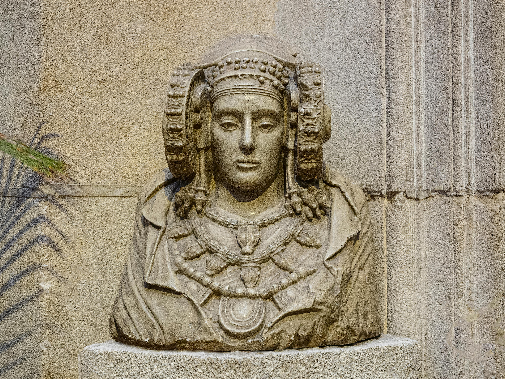
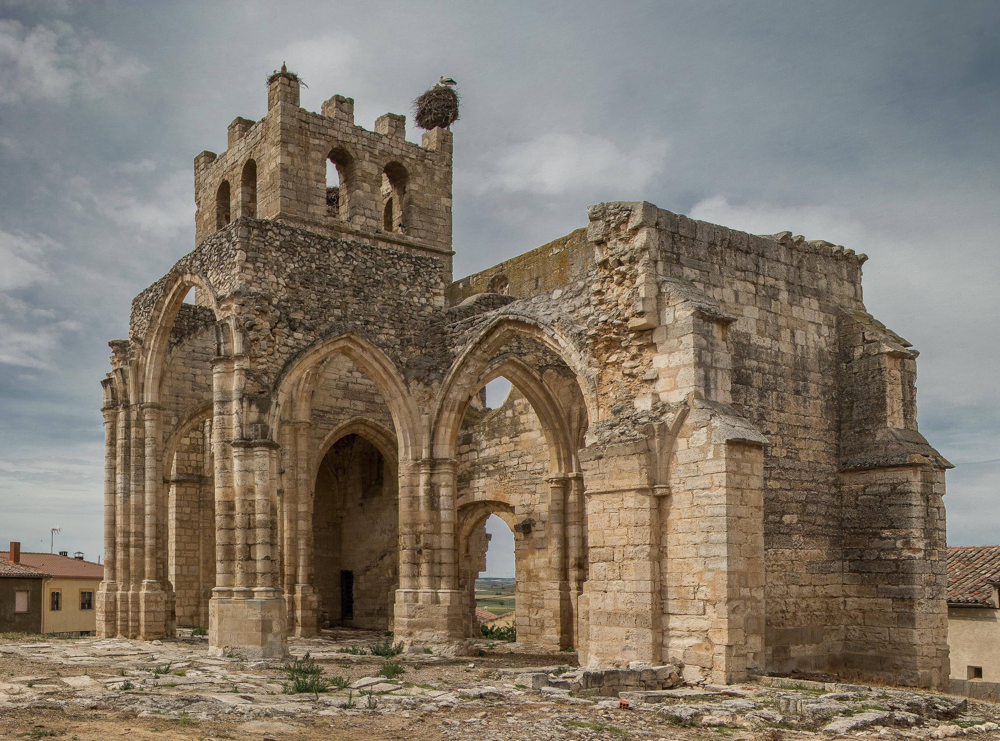
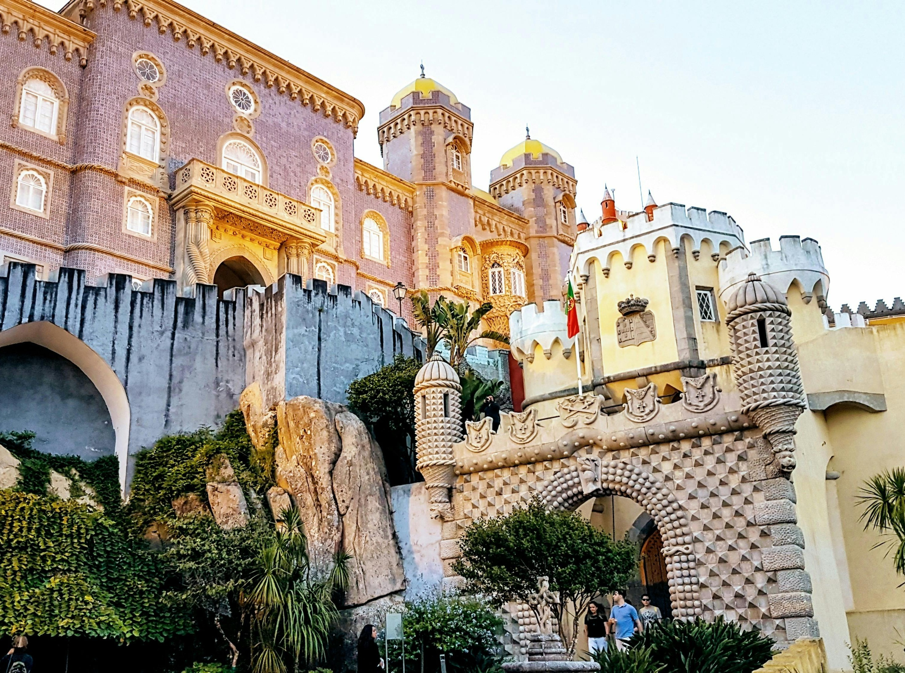
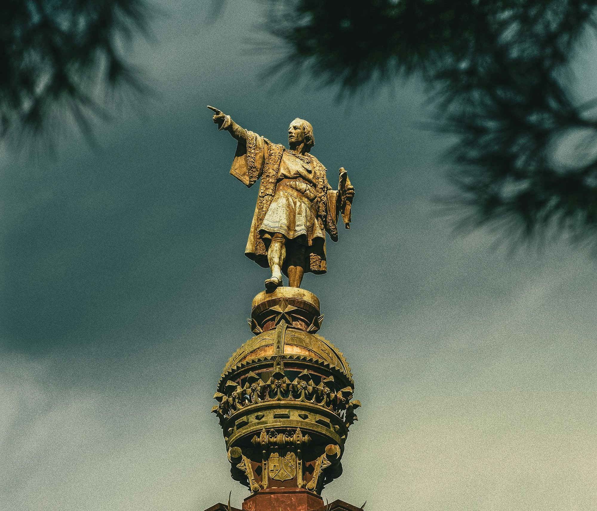

Journey Through Spain's Past
Explore the fascinating historical eras that shaped modern Spain, from ancient civilizations to world empire.
Explore HistorySpain's Rich Historical Tapestry
Spain's history spans thousands of years, with influences from various civilizations that have shaped its unique identity.
Ancient Iberia
Early settlements by Iberians, Celts, and arrival of Phoenician and Greek traders.

Roman Hispania
Roman rule from 218 BC to 5th century AD, leaving roads, aqueducts, and language.

Islamic Al-Andalus
Muslim rule (711-1492) bringing advances in science, architecture, and agriculture.

Key Historical Periods
Reconquista
Christian kingdoms gradually retake the peninsula over 800 years.
Spanish Empire
1492-1898: Global empire following Columbus' voyage.
Modern Spain
20th century to present: Civil War, democracy, and EU membership.
Famous Monarchs
Christopher Columbus
